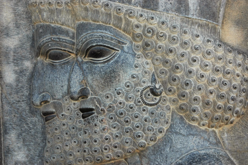

İRAN, 20 Temmuz
Ne müthiş bir gündü. Mola günümüzü değerlendirmek için çok detaylı bir plan yaptık. “300 Spartalı” adlı ünlü filmden, herkesin hatırlayabileceği ünlü Pers Kralı Kserkses’in kurduğu, doğu dünyasındaki en büyük antik şehirlerden birisi olan Persepolis’i görmek için gece yol alacağız. Gündüz bu şaheseri gezecek sonra yine geceyi kullanarak zaman kaybetmeden Tahran’a geri döneceğiz.
İran otobüsleri birkaç sınıf. Hatta bu otobüslerin hareket ettikleri garajlar da ayrı.
Persepolis’i görmeye giderken kafamdan bilgileri tazeliyorum. Lonely Planet’ın İngilizce İran kitabı biraz yardımcı oluyor hatırlamamıza. Yarın gece de geri döneceğiz. Geceleri yolculuk yapmak, bisiklet sürebileceğimiz günlerden sadece birini feda ederek bu önemli şehri görme fırsatı yarattı.
Persepolis ise anlatılamaz. Bir kere çok çok büyük. Çok yüksek, çok geniş. Şehir, duvar işlemelerinde ve tarihi metinlerde her zaman bir dev gibi tasvir edilmiş Kral Kserkses kadar haşmetli. Taş işlemeleri inanılmaz. Muhtemelen binlerce yıl dayansın diye en sert taşlar seçilmiş. Fakat bu sertlikte bir taşı da işlemek çok zor. Taşın sertliği ve anıtın yüzyıllar sonrasında bile ayakta kalabilmesi arzusu arasındaki ters denklemi çözen şey; taş ustasının sabrı.
Bisiklet sürücüsü gibi binlerce kere aynı şeyi yapıyor ve sonunda hedefine ulaşıyor usta. İşlemesi kolay, görece yumuşak bir taş seçmiş olsalardı günümüze kalan bir şey olmayacaktı. Heykeller ve rölyefler o kadar ince işlenmiş ve bugüne o kadar iyi ulaşmış ki şaşırmamak mümkün değil. Yağmur, rüzgâr ve diğer coğrafi şartlar, bu sanat harikalarını çok az yıpratmışken, insanın verdiği zararlar daha yıkıcı olmuş.
Sıcakta dev taş heykellerden birinin gölgesinde oturup kafamda bu taşı işleyen ustaları canlandırdım. Kararlı olmaya dair fikirlerimi geliştirdi burası. Amacına ulaşma konusunda kararlı, tavizsiz olmalı, şüpheye düşmemeli, hedefe ulaşmak için ara vermemeli insan. Çünkü kayayı şekillendiren suyun gücü değil dalgaların sürekliliği. Bir tur bisikletçisi için de, pedala ne kadar güçlü bastığı değil, üst üste kaç defa basabildiği ve devamlılığı önemli.

İran, Persepolis
“Taşı delen suyun gücü değil dalgaların sürekliliğidir.”